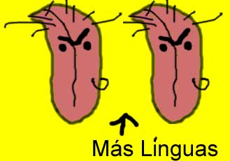
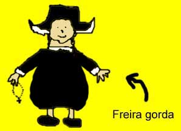

A Lenda de Hernandez Marcapasso
Hernandez Marcapasso veio de Budapeste com uma única idéia na cabeça: MATAR. Era um jovem rapaz sonhador de doze anos de idade.
Essa idéia fixa o perseguia, até que ele então realizou que seu plano de vida era extremamente vazio. Sentiu-se perdido existencialmente. Foi quando mudou de idéia, e decidiu por MATAR, ARRANCAR OS OLHOS, COZINHAR NO MOLHO DE ALCAPARRAS, DAR AOS PORCOS, DANÇAR TANGO POR SOBRE O CORPO, ENFIAR-LHE PELAS ORELHAS UMA BANDEIRA DO ORGULHO GAY, VENDER A FAMÍLIA COMO ESCRAVOS GLADIADORES, TOCAR FOGO EM UMA FREIRA GORDA, DEPENAR UM PERU COM UM RALADOR DE QUEIJO E INALAR SULFIL-POLICLORITENO PARA TER UMA URINA CORROSIVA.
Com certeza esse plano era bem mais divertido que o anterior, mas Hernandez desistiu dele também ao conhecer Félix, o torresmo.
Os dois tornaram-se grandes companheiros do mundo do crime. Sua maior diversão era quando iam para a rua, bebiam rum e brigavam com navalhas até o sol raiar, ou até cair a primeira orelha, regras são regras. E cantavam cantigas piratas à beira da praia. E conversavam, e tinham um ao outro.
Hei, Marcapasso, às vezes fico pensando como seria a vida na terra, sempre em um só lugar, longe dos albatrozes, perto de mulheres..., Meu caro Torresmo, sobre o que você está falando, Não, nada não, só estava pensando em como seria a vida se nós não fôssemos piratas, Nós não somos piratas, Claro que somos, Não, não somos, (reflexão) é verdade ha ha ha não somos mesmo, ..., ... ai ai estou meio sem sono, É, eu também, Você tem certeza de que nós não somos mesmo piratas, né, Félix, meu velho, durma agora como uma boa ratazana do mar.
Aconteceu que decidiram, um dia, dominar o mundo. Hernandez chegou à conclusão de que o jeito mais fácil seria cegando todas as tesouras do mundo, causando a dúvida, o desespero, a angústia, o caos e a desordem. E Félix, o torresmo, tornou-se seu fiel escudeiro. Por essas épocas, Marcapasso fundou também uma seita, que chamava-se Seita Número Nove, mas que ficou muito grande e dividiu-se depois em KKK, Kardecismo, Umbanda, Motoqueiros Irados do Oitavo Reich, Judaísmo, Legião da Boa Vontade, Sindicato dos floricultores, e PSDB. Cada uma das facções com algumas diferenças ideológicas entre si.
Conta a lenda que Hernandez Marcapasso vive até hoje, e permanece em seu intento de dominação. Onde há uma tesoura para ser cegada, lá estará ele. E dizem as más línguas que está ele muito próximo de seu objetivo da controle mundial.
 